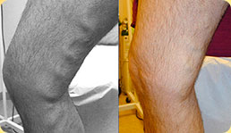

Per la salute e la bellezza delle tue gambe SENZA VENE
VARICOSE!
e approvato per il suo impiego
- Risultati garantiti
- Componenti naturali
- Tecnologia unica
Restano solo 5pacchi per l’offerta!
Fino alla fine dell’offerta restano
La salute e la leggerezza delle tue gambe grazie alla crema-balsamo “Varicobooster”!
- Un rimedio perfetto per
la profilassi e il trattamento
delle varici - Stimula la normale
circolazione del sangue - Elimina i segni di stanchezza
delle gambe con rapidità - Idrata
e nutre la pelle
La forza della crema-balsamo “Varicobooster” sta nella sua consistenza unica che combina
gli elementi necessari per un trattamento efficace delle varici e per dare bellezza
e salute alla pelle delle gambe!
Troxerutina
- Elimina la sensazione di pesantezza
e di stanchezza delle gambe - riduce la penetrabilità
e la fragilità capillare - riduce l’edemizzazione
e le infiammazioni
Castagno delle indie
e foglie di betulla
- rinforzano le pareti dei vasi sanguigni
e conferiscono loro maggiore elasticità - eliminano
le microlesioni della pelle - eliminano il dolore, l’edemizzazione
e la stanchezza delle gambe
Olio eterico di limone,
oli di soia e cocco
- deodorano
e riducono la sudorazione - eliminano la sensazione
di secchezza e di oppressione - idratano profondamente
e alimentano la pelle delle gambe
Assenzio, mentolo,
camomilla e ortica
- danno leggerezza
e forza alle gambe - rinfrescano e disinfettano
la pelle delle gambe - accelerano la cicatrizzazione
di micro-ferite
Сaffeina, miele
e ginkgo biloba
- curano in maniera incisiva
e danno tono alla pelle - stimolano il flusso del sangue
- attivano il metabolismo
dei tessuti - accelerano
il rinnovamento cellulare
APPLICAZIONE REGOLARE DELLA CREMA-BALSAMO “VARICOBOOSTER”
per varie settimane e già si notano i risultati reali della riduzione delle varici!
100% Effetto curativo
Il prodotto è stato certificato sul territorio della IN.C.E. e ha superato i test clinici RAMS
Scoprirai i miglioramenti dopo aver utilizzato il balsamo soltanto per 1,5 settimane! Va provato?
-

«La crema-balsamo riesce a eliminare le reti venose delle gambe. Dopo averlo applicato si ha una sensazione di leggerezza percettibile, passa la sensazione di dolore e di oppressione.»
Gaetana, 45 anni
-

«Applico regolarmente la crema-balsamo “Varicobooster” dopo il lavoro. Elimina rapidamente l’edemizzazione e la stanchezza dalle gambe, inoltre è diminuita di molto la sudorazione dei piedi. La mattina sento le gambe rigenerate. Lo consiglio a tutti!»
Venera , 35 anni
-

«La crema-balsamo “Varicobooster” è una vera salvezza per me. La applico ogni giorno. Dopo soltanto un paio di settimane dal primo utilizzo ho notato un’evidente riduzione delle reti venose, le mie gambe si riprendono subito, si prova leggerezza ed energia.»
Simona, 35 anni
Garantire l’efficacia della crema-balsamo
“Varicobooster” è molto semplice!
Dopo soltanto 1,5 settimane di applicazione regolare del rimedio sopra descritto, noterai una diminuzione dei sintomi delle varici. Nutre e tonifica la pelle delle gambe, elimina le micro-ferite e le micro-lesioni.
È possibile affermare con certezza che applicare il balsamo per un periodo esteso nel tempo è il miglior metodo per la profilassi ed il trattamento delle varici!
I componenti naturali della crema-balsamo “Varicobooster” fanno sì che questo rimedio abbia una grande efficacia e funzioni rapidamente. Il prodotto supera tutti i test clinici e non arreca alcun rischio alla salute del consumatore. La garanzia del risultato è fornita da migliaia di opinioni positive in tutte le parti del mondo!
La bellezza e la salute delle tue gambe sono protette dai componenti naturali del balsamo “Varicobooster”.
La crema-balsamo “Varicobooster” è un prodotto certificato e rispetta tutte le norme di qualità. Diffidate delle imitazioni! La crema-balsamo “Varicobooster” è venduta SOLTANTO nel suo pacco originale!
L’ efficacia della crema-balsamo “Varicobooster”
è provata e dimostrata da migliaia di opinioni positive da tutte le parti del mondo!
Ordinare ora
L’opinione dell’esperto
La maggior parte delle rappresentanti del sesso femminile, come quelli del sesso maschile, conoscono la sensazione di pesantezza e dolore alle gambe. In genere, vanno dal medico quando la malattia già ha iniziato a progredire e diventa impossibile nascondere i segni della varicosi. Come qualsiasi medico credo che prevenire sia meglio che curare. Per questo consiglio ai miei pazienti la crema-balsamo “Varicobooster”.
Contrasta perfettamente i segni ben percettibili della varicosi e può persino prevenire che la malattia si manifesti. Oltre a queste proprietà molto importanti, la crema ha un meraviglioso effetto calmante, rinfrescante e deodorante. La crema-balsamo “Varicobooster” vi libererà della sensazione delle “gambe stanche” rapidamente e facilmente e vi darà un senso di leggerezza e di forza dopo un intero giorno di lavoro.
Ma non sarà dannoso?
La crema-balsamo “Varicobooster” è composta completamente di componenti naturali, non contiene parabeni, coloranti, elementi sintetici e prodotti OGM. Il prodotto ha ottenuto la certificazione e non presenta controindicazioni.
Il trattamento
Il período e l’efficacia del trattamento è individuale e dipende direttamente dall’estensione della malattia. Il periodo medio dell’applicazione della crema-balsamo, alla fine del quale i risultati diventano visibili, è approssimativamente di 1,5 – 2 settimane.
Dove comprarlo?
L’unico fornitore ufficiale del balsamo-crema “Varicobooster” nel territorio d'Italia e Europa è la nostra azienda, è possibile effettuare l’ordine sulla pagina web varicobooster.ru. Comprate soltanto prodotti originali “Varicobooster”!
Consegna
4-7 giorni dopo aver fatto l’ordine.
Crema-balsamo “Varicobooster”
Venduta soltanto all’interno del pacco originale che riporta il codice identificativo unico!
delle imitazioni!
Come effettuare l’ordine della crema-balsamo “Varicobooster”
- Compila il modulo
di richiesta sottostante - Attendi la chiamata
dell’operatore - Completa il pagamento della spedizione della crema-balsamo
“Varicobooster”
dopo la consegna presso l’ufficio postale
o tramite corriere
Le ore felici
I PRODOTTI VARICOBOOSTER
LAVORIAMO TUTTI I GIORNI!